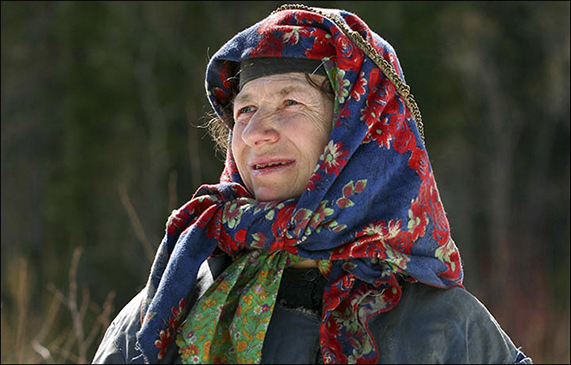
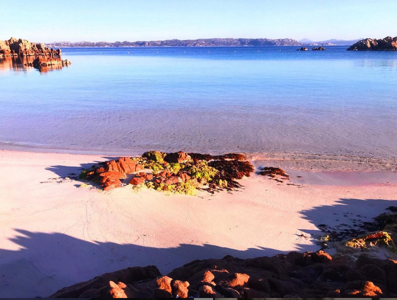

Three Modern Hermits
Following one’s own way
If you like reading about philosophy, here's a free, weekly newsletter with articles just like this one: Send it to me!
We citizens of affluent societies, living safely and shielded inside our families, our workplaces, our ever repeating daily routines, often lose the sense of how wide the stage is upon which a human life can be played out, and what an adventurous and magical place our Earth really is.
In the past two months, we have been visiting hermit lives, and we have met many different kinds of hermits: young US Zen practitioner Jane Dobisz, voluntary castaway Tom Neale in his Pacific island paradise, and the sage who wrote the Chinese classic Dao De Jing right before disappearing into the clouds on the back of an ox.
Today, we will look at three more, who could not have been more different from each other; and yet, there is a kind of longing, a love for solitude, that deep down unites these three lives and connects them to the millennia-old hermit dream. Sometimes, the life of hermits seems to take place somewhere very far away, as in the case of Siberian hermit Agafia Lykova. At other times, one feels that just a tiny shift in circumstances, an accidental choice that might have played out in a slightly different way, is all that would be needed to gently push our lives out of their rut and into the footsteps of someone like Mauro Morandi, caretaker of his own little island off the coast of Sardinia.

Robert Rodriguez on Hermits
Robert Rodriguez is the author of The Book of Hermits and founder and editor of the website Hermitary. In this interview, he talks to us about the history of eremitism and the nature of hermit life.
The Lykov family
In the summer of 1978, a Russian helicopter pilot spotted a cabin in a remote and inaccessible part of the Siberian taiga. 1000 metres (3400 ft) up a mountain, 240 km (150 miles) away from any human settlement, a little hut stood surrounded by cultivated fields. A group of geologists, who were doing research in the area, went down to meet the inhabitants of the hut.

It turned out that the family had fled their home village of Lykovo, a place with now 87 inhabitants and one street, in 1936, after one of their members was killed by Soviet soldiers. They Lykovs were Old Believers, a sect of the Orthodox church that had been persecuted since the end of the 17th century, in one of those senseless acts of religious insanity that must seem utterly pointless and incomprehensible to anyone in their right minds: the main differences between Old Believers and modern Russian Orthodox Christians being the way the name “Jesus” is spelled, whether the sign of the cross is made with two or three fingers, and whether the procession in church wanders in a clockwise or counter-clockwise direction. It could be something out of a Monty Python sketch, if it hadn’t tragically involved the persecution of around 10 percent of the Russian population who still identified as Old Believers in 1910.

Agafia Lykova, via explorersweb.com
The Lykovs decided to move to the Siberian taiga to escape from the Soviet state that considered their faith a threat. There they built their cabin in the forest, had children, and tried to live off the unforgiving Siberian land. The mother of the family died of hunger in 1961, and three of the children died in 1981, while the father lived until 1988. Agafia, one of the two younger children, was left alone in the family hut, where she lives until now.
A more detailed article, retelling Agafia Lykova’s story, can be found in the Smithsonian Magazine, here.
In 70 years, Agafia Lykova has left her hut in the mountains only six times, and she still fights for her survival every single day. For a period of eighteen of these years, one of the geologists kept her company, but he was himself old and frail by that time, and had to rely on Agafia to supply him with water and firewood, rather than being much of a help to her.
Still, Agafia Lykova doesn’t want to change her lifestyle and has stated that the air of cities makes her sick and that busy streets frighten her. In 2021, when it became obvious that the Lykovs’ old cabin was falling apart beyond repair, a wealthy Russian industrialist, once declared Russia’s richest man, paid for a new cabin for Agafia in the same remote location.
She still lives there.

Lost in the Taiga: One Russian Family's Fifty-Year Struggle for Survival and Religious Freedom in the Siberian Wilderness. Journalist Vasily Peskov visited Agafia Lykova once a year for 12 years, and in this book he wrote down her story. It is a haunting tale of a solitary life in one of the least hospitable places on Earth. -- Be careful with the price of this book. Last time I checked, it was crazily expensive. You might want to find a used copy somewhere else.
Amazon affiliate link. If you buy through this link, Daily Philosophy will get a small commission at no cost to you. Thanks!
Mauro Morandi
32 years ago, Mauro Morandi, now 81, was trying to sail from Italy to Polynesia, when his boat was stranded on Budelli, a little island just between Sardinia and Corsica, west of the Italian mainland. Morandi was fleeing from capitalist society to a quieter, more natural life in the Pacific — but it didn’t take him long to realise that perhaps such a life could be found much closer to home.
He stepped out onto the island’s distinctive pink sand, met the previous caretaker, who was just about to retire, and got the job. Since then, he has lived continuously on the island. In the summer, he meets the occasional tourists and guides them around the island, keeps the beaches clean and the paths in order. In the winters, he spends many months holed up in a little hut, reading, thinking and looking out to the sea.

The pink sands of Budelli. Source: Mauro Morandi’s Instagram
In 2013, the company that owned Budelli went bankrupt, and a few years later the Italian government took control of the island. In 2016, they attempted to evict Mauro, because he was now living in what had been declared to be a national park. A collection of signatures in his support and the slowness of the Italian government gave him another few years on the island. It was only this past April that The Guardian reported that Mauro Morandi would be finally leaving Budelli and relocating to a small apartment on the closest inhabited island.
National Geographic reported in April:
Morandi said that teaching people how to see beauty will save the world from exploitation. “I would like people to understand that we must try not to look at beauty, but feel beauty with our eyes closed,” he says.
Winters on Budelli are both beautiful and lonely. Morandi endured long stretches of time — upwards of 20 days — without any human contact. He found solace in the introspection it affords him, and often sits on the beach with nothing but the sounds of the wind and waves to punctuate the silence.
When he wasn’t reading or wandering the island, the hermit of Budelli spent his time creating artworks from driftwood and other materials found on the beach, reading the ancient Greek philosophers and thinking about life and the place of man within nature.
He always emphasised how crazy life in the cities was, in his opinion, and how much modern man is unable to live with the rhythms of nature. But also how important it was that we try to change, to see how insignificant man really is in the grand scheme of nature, and to try to live in harmony with our natural environment.
Mauro Morandi had to leave his island at 81, but his words ring more true and more urgent than ever.
A beautiful article on Mauro Morandi, the hermit of Budelli, can be found on CNN travel.
Rachel Denton
Sister Rachel Denton always knew that she wanted to be alone. As a child, the thing she valued most was to be alone in her room and to play by herself. Later, she briefly entered a monastery, only to find that the daily rituals distracted her from the contemplative life she was seeking and that life in the community of nuns did not afford her the solitude she wanted.
For another few years, Rachel Denton worked as a science teacher and deputy head teacher in various schools, but she never found true happiness in this work. Finally, when she had to change schools at the beginning of 2002, she took the opportunity to change her life and become, officially, a hermit.

The Hermit of Suwarrow
Tom Neale spent a total of fourteen years alone on a little island in the Suwarrow Atoll in the South Pacific, where he found peace and happiness in solitude. We have a look at this extraordinary life.
An unusually well-connected hermit, Rachel Denton earns her living by giving calligraphy courses and selling her artworks over the Internet. This allows her to finance her frugal lifestyle. A typical day is, according to an article that she wrote about herself in The Guardian, spent praying, working on her art and calligraphy business, tending the vegetables in her garden, meditating and reading.
On her hermit homepage, Rachel Denton gives advice on how to be a hermit:
With dry humour she warns potential future hermits of relying too much on the fantasy of making a living from the sale of artisanal products:
And her published “Rule of Life” includes:
To live simply, in solitude and silence, staying and returning there insofar as duties permit.
To work for a sufficient living, seeking means which are directly supportive of simplicity, solitude and silence.
To spend time each day in prayer, in silence, in study, and in joining with the Divine Office of the Church.
Three hermits
Three hermits — three lives that couldn’t be more different in their beginnings and backgrounds, and that yet all converge at the same point: the solitude of the hermit.
The Russian woman born into an outcast’s life in harsh Siberia, who had known her family as the only humans for the first thirty years of her life. She always returned back to her isolated home, even when she was the only one left there.
The Italian teacher who left a comfortable life in order to free himself from capitalism, and who by accident ended up being the caretaker of a paradise on Earth and a critic of our modern consumerist societies.
And the Catholic nun who had been attracted to loneliness all her life, and who, after living a life in society, finally found the courage to leave and to devote herself to God and to a life of contemplation and prayer; but a life that managed to make peace with the world and that includes Twitter, Facebook, a LinkedIn profile and an online business.
As different as the three are, they have some obvious common traits. One is a fierce individualism. None of the three has felt compelled to change their lives because society told them to do so. Ignoring the Soviet government’s advances, Agafia Lykova returned to the mountains. Ignoring, for a long time, both the temptations of the world and the Italian government’s threats, Mauro Morandi persevered as the caretaker and friendly spirit of Budelli island. And Rachel Denton had the strength to leave the monastery that she had just entered and to pursue her own vision of a hermit life in a country and at a time when nobody else was doing anything like that. Even after she was, a few years ago, diagnosed with cancer, she did not change her mind:
“It was interesting when I got cancer,” she said in an interview in 2015, “because you make a bucket list and my bucket list was to spend my life as a hermit.”
A second thing that makes all three stand out is how much work, hardships and effort they are willing to accept in order to pursue their dreams. Seeing how these people live, one realises how easy our own lives really are. Few of us have had to extract their drinking water from frozen Russian streams in a Siberian winter, or to spend endless, dark winter-months alone, holed up in an old hut on a deserted island.
Another, perhaps more surprising trait, is how social two of the three are. Some hermits do reject company, but both Morandi and Denton have been teachers in their previous lives and they have stayed teachers even in their existence as hermits. Mauro Morandi educating the visitors to his island and bringing its pink sands and stunning sunsets to thousands of his followers on the Internet; Rachel Denton teaching courses and selling her calligraphy online. And both documenting their unique, daily lives on Instagram, Facebook and other social media.
For me, the most amazing insight from reading about them was the realisation how varied, how unusual, how out of the ordinary human lives can be. And yet, we all have a part to play in the big theatre of human life: our very own, unique role, the one that is just right for us and no-one else. Finding this place that is uniquely one’s own, no matter how crazy or unusual it may seem, is perhaps the most reliable path to true happiness.